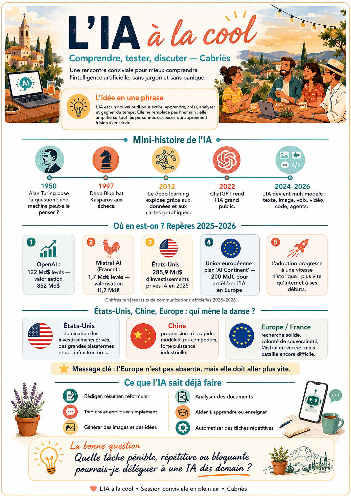
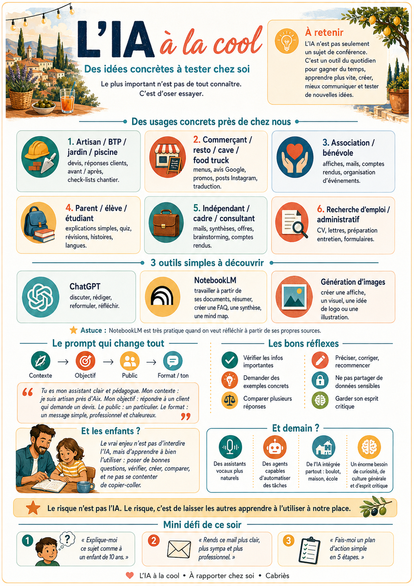

ChatGPT franchit 1 milliard d'utilisateurs
En trois ans, l'IA conversationnelle est passée de curiosité à réflexe quotidien pour une partie massive du grand public.
Une rencontre conviviale pour mieux comprendre l'intelligence artificielle, sans jargon et sans panique. Le but : repartir avec des idées simples à tester chez soi dès demain.

Résumé de la newsletter “Les limites des LLMs” d'Eliott, Perspectives : les modèles de langage sont partout, mais leur architecture reste contestée pour les tâches qui demandent une compréhension du monde réel.
En trois ans, l'IA conversationnelle est passée de curiosité à réflexe quotidien pour une partie massive du grand public.
La newsletter cite Google et Anthropic comme exemples de dépenses mensuelles gigantesques pour obtenir plus de puissance de calcul.
Microsoft lance ses propres modèles internes ; MiniMax saute une génération. Les labs vont presque plus vite qu'ils ne publient.
Un LLM manipule très bien le langage, mais il n'a pas vraiment de modèle du monde. Pour la robotique, les agents et la prédiction des conséquences, ce plafond devient important.
Au lieu de prédire mot par mot ou pixel par pixel, JEPA apprend des représentations internes : ignorer le bruit, comprendre l'essentiel, planifier à plusieurs niveaux d'abstraction.
L'IA est un nouvel outil pour écrire, apprendre, créer, analyser et gagner du temps. Elle ne remplace pas l'humain : elle aide surtout les personnes curieuses qui apprennent à bien s'en servir.
Commencer par les mots simples : prompt, modèle, hallucination, contexte, agent, RAG.
Choisir une tâche pénible, répétitive ou bloquante que l'on pourrait déléguer à une IA dès demain.
Voir l'IA comme un outil quotidien : gagner du temps, apprendre plus vite, créer, communiquer et tester de nouvelles idées.
Quelques jalons suffisent pour comprendre pourquoi l'IA semble avoir accéléré d'un coup.
Les chiffres de l'infographie donnent l'ordre de grandeur : beaucoup d'argent, beaucoup d'adoption, beaucoup de vitesse.
Domination des investissements privés, des grandes plateformes et de l'infrastructure.
Modèles très compétitifs et forte puissance industrielle.
Recherche solide, volonté de souveraineté et Mistral en vitrine, mais bataille encore difficile.
Le plus important n'est pas de tout connaître. C'est d'oser essayer sur une situation réelle.
Devis, réponses clients, avant/après, check-lists chantier.
Menus, avis Google, promos, posts Instagram, traduction.
Affiches, mails, comptes rendus, organisation d'événements.
Explications simples, quiz, révisions, histoires, langues.
Mails, synthèses, offres, brainstorming, comptes rendus.
CV, lettres, préparation d'entretien, formulaires.
Les usages de base sont déjà très puissants quand on les relie à une vraie tâche.
Transformer un brouillon, clarifier une idée, synthétiser une réunion ou rendre un mail plus professionnel.
Adapter le niveau, demander une analogie, créer une explication pour enfant, client ou collègue.
Créer une affiche, un visuel, une idée de logo, une illustration ou plusieurs pistes créatives.
Extraire les points clés d'un PDF, comparer des sources, préparer une FAQ ou une synthèse.
Créer des quiz, corriger, simplifier, donner des exemples progressifs.
Préparer des relances, classer des informations, enchaîner plusieurs étapes avec des outils.
Pour l'événement, commencer par trois outils simples, puis garder les autres comme bonus pour aller plus loin.
Discuter, rédiger, reformuler, réfléchir. Le meilleur point d'entrée sans setup technique.
Travailler à partir de ses propres sources : résumer, créer une FAQ, une synthèse ou une mind map.
Créer une affiche, un visuel, une idée de logo ou une illustration.
Un bon prompt n'est pas magique. Il donne simplement le contexte, l'objectif, le public et le format attendu.
Tu es mon assistant clair et pédagogique. Mon contexte : je suis artisan près d'Aix. Mon objectif : répondre à un client qui demande un devis. Le public : un particulier. Le format : un message simple, professionnel et chaleureux.
Vérifier les infos importantes, demander des exemples concrets, comparer plusieurs réponses, préciser, corriger et recommencer.
Ne pas partager de données sensibles, garder son esprit critique, vérifier les chiffres et distinguer brouillon utile et vérité vérifiée.
Poser de bonnes questions, vérifier, créer, comparer, expliquer. L'objectif est de ne pas se contenter de copier-coller.
Ils deviennent plus naturels.
Ils seront capables d'automatiser des tâches.
Elle arrive partout : boulot, maison, école.
Un énorme besoin de curiosité, de culture générale et d'esprit critique.
Pas besoin d'une formation de 40 heures : une bonne première expérience suffit souvent à débloquer l'envie d'explorer.
“Explique-moi ce sujet comme à un enfant de 10 ans.”
“Rends ce mail plus clair, plus sympa et plus professionnel.”
“Fais-moi un plan d'action simple en 5 étapes.”
Version condensée du glossaire PDF : les termes à connaître pour comprendre les discussions IA sans se perdre.
IA capable de produire texte, image, code, audio, vidéo, idées ou plans.
Grand modèle de langage derrière ChatGPT, Claude, Gemini, Mistral ou Llama.
Modèle qui traite texte, image, audio, vidéo, fichiers ou actions.
Instruction donnée à une IA.
Art de formuler une demande claire pour obtenir un meilleur résultat.
Rendre une IA compatible avec intentions, règles et attentes humaines.
Quand l'IA invente une information fausse mais la présente comme vraie.
Ancrer la réponse dans des sources fiables ou des données fournies.
L'IA cherche dans une base documentaire avant de générer sa réponse.
Informations disponibles dans la conversation ou les fichiers.
Quantité maximale d'informations prises en compte en une fois.
Informations conservées entre plusieurs conversations.
Entreprise conçue dès le départ autour de l'IA.
Approche où l'IA est au cœur de la stratégie produit ou business.
Assistant IA qui aide l'humain sans agir totalement seul.
IA capable de planifier, utiliser des outils et poursuivre un objectif.
IA orientée action, capable d'étapes, d'outils et de corrections.
Workflow où plusieurs étapes sont pilotées par IA ou agents.
Système personnel ou pro piloté par agents IA.
Capacité à fonctionner malgré erreurs, données imparfaites ou pannes.
Bien fonctionner quand les données changent ou sont inattendues.
Rendre les IA sûres, fiables, contrôlables et non dangereuses.
Règles et responsabilités pour encadrer l'usage IA.
Jeu de données utilisé pour entraîner, tester ou évaluer.
Données utilisées pour entraîner un modèle.
Réentraînement spécialisé sur des données particulières.
Représentation numérique du sens d'un texte, document ou image.
Base spécialisée pour stocker et chercher des embeddings.
Données générées artificiellement pour entraîner ou tester.
Test standardisé pour comparer des modèles.
Évaluation d'un modèle sur une tâche précise.
Test agressif pour trouver les failles d'un système IA.
Tendance à produire des réponses déséquilibrées ou stéréotypées.
Comprendre pourquoi une IA a donné une réponse.
Modèle dont les poids sont disponibles.
Petit modèle de langage, utile pour tâches ciblées ou locales.
IA qui fonctionne directement sur l'appareil de l'utilisateur.
IA exécutée près de la source des données.
Avantage défensif difficile à copier : données, distribution, expertise, marque.
L'IA propose ou exécute, l'humain vérifie ou valide.
Organisation de plusieurs outils, modèles ou agents.
Capacité d'un modèle à utiliser navigateur, email, code, API, etc.
Appel structuré d'une fonction ou API par un modèle.
Moment où le modèle produit une réponse.
Morceau de texte utilisé par les modèles.
Petit modèle entraîné à imiter un grand modèle.
Architecture où certains experts internes sont activés selon la demande.
Choix automatique du bon modèle selon la tâche.
Modèle de secours si le principal échoue ou coûte trop cher.
Sujet ajoute depuis Telegram le 09/06/2026.
Contenu ajoute depuis Telegram, a completer selon les besoins.
Elles restent accessibles telles quelles, avec les informations reprises dans la page en version texte.

Le document complet reste disponible en téléchargement.